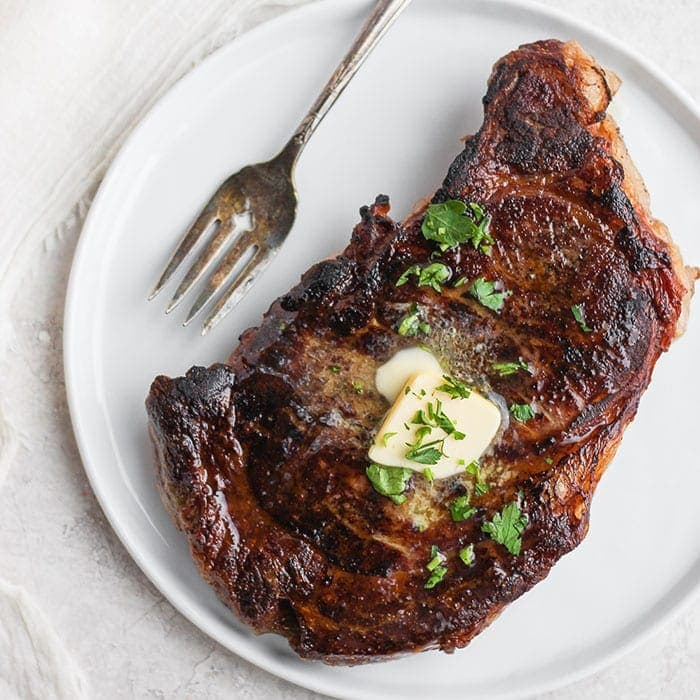

Steak

Description:
This is a recipe for steak to be done at the exact doneness of your preference. You will need a sous vide circulator,
a pan to sear the steak or a grill, a plate for the ingredients and finished product, some butter, a pot to circulate the water
, a plastic bag, and the following ingredients:
Ingredients:
- choice of steak
- salt and pepper (or your choice of seasoning)
- choice of butter
Steps:
- Fill your empty pot with water and circulate to desired temperature using sous vide circulator.
- Season your steak, and place in your plastic bag.
- Once steaks are in bag, submerge bag under water to get all air out of it, and clip it to the side of pan
- Sous vide steak at desired temp for time according to sous vide machine.
- Once meat is cooked, remove the meat from the water bath and take out of bag.
- Pat the steaks dry, and begin heating your pan or grill.
- Once pan or grill is heated, coat the pan or grill with desired oil/fat.
- On high heat, sear your steak in the pan or the grill for 1-2 minutes total for both sides, so as to not overcook the steak.
- Once the steak has reached desired sear on both sides, immediately remove from heat, place on plage, and let rest for a few minutes.
- The steak should be ready to eat.